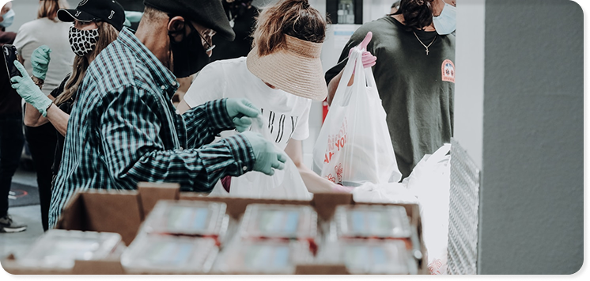

Ada banyak cara untuk berbagi dan memberikan dampak baik untuk lingkunngan sekitarmu, salah satunya dengan menjadi relawan. Selain bisa membawa manfaat yang luar biasa untuk lingkunganmu, kamu juga bisa mendapatkan pengalaman dan menambah makna untuk hari-harimu.
Voluntrip by TapakAsa hadir sebagai wadah untuk kamu yang inginn mendapatkan pengalaman menjadi relawan dalam berbagai misi kebaikan. Kali ini Voluntrip akan erkunjung ke Masajid IKHTIAR Kampus UIN Sunan Kalijaga Yogyakarta, dan menjadi relawan Belajar Pembuatan Jamur Tiram Bersama Kelompok Petani Perempuan. Kamu bisa ikut terlibat dalam berbagai kegiatan berikut:
- Belajar pemeliharaan bedengan jamur tiram bersama kelompok petani perempuan
- Praktik pengolahan jamur tiram bersama kelompok petani perempuan
Mohon untuk peserta untuk menjaga informasi pribadi masing-masing peserta. Jika terdapat penyebaran informasi oleh peserta (seperti bertukar nomor telp) bukan tanggung jawab tim Voluntrip
Dengan ikut menjaddi peserta Volluntrip, kamu sudah ikut menjadi bagian dalam misi kebaikan untuk berbagi sesama makhluk hidup dan mendapat perllindungan Asuransi TapakAsa selama kegiatan.
Yuk daftar sekarang!